Manajemen Stok Barang dengan POS, HRM, Akuntansi
Software yang akan membantu Anda mengelola inventaris, akuntansi, dan waktu Anda. Kami percaya bahwa software ini cocok untuk model bisnis grosir dan eceran dan merupakan produk yang ideal untuk Toko Super mana pun. Software yang ramah pengguna ini sepenuhnya responsif dan memiliki banyak fitur. Semoga software ini berguna untuk mengelola inventaris bisnis Anda. Kontak 0821 4409 2552
Konfigurasi Printer POS
Pertama, Anda harus menginstal driver printer Anda. Lalu pergi ke pengaturan dan pilih Perangkat.
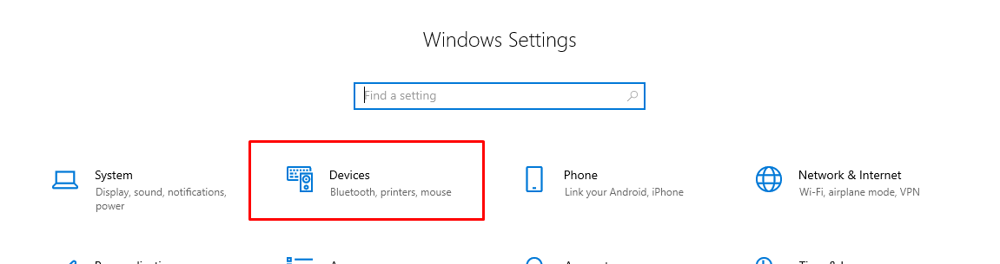
Lalu pergi ke Perangkat dan printer.
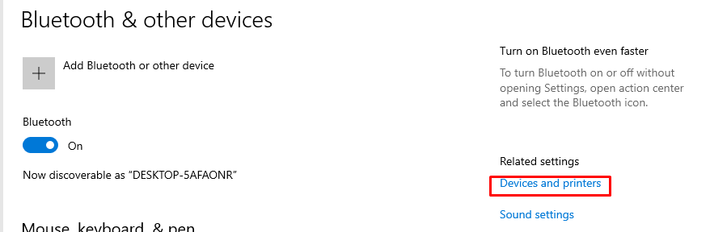
Atur printer POS Anda sebagai printer default.
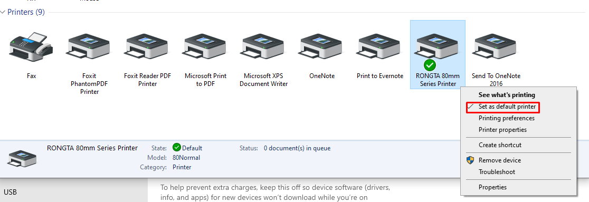
Lalu pergi ke Preferensi pencetakan.
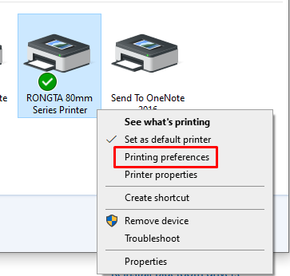
Lalu pergi ke Advanced.
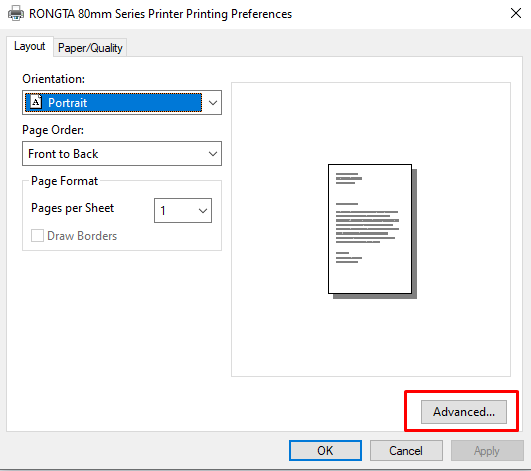
Pilih opsi ukuran kertas ke-3 dan klik Ok.
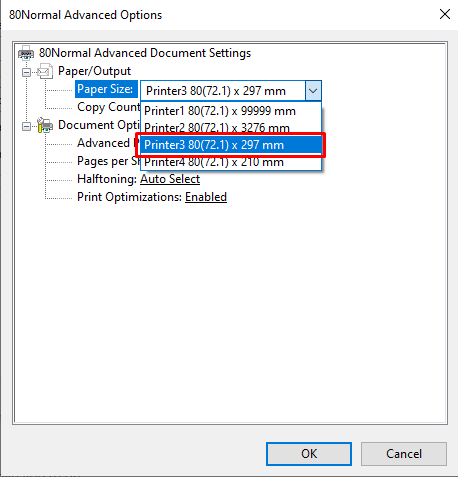
Setelah itu masuk ke properti printer.
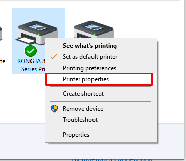
Pergi ke pengaturan perangkat dan pilih opsi ke-3 otomatis.
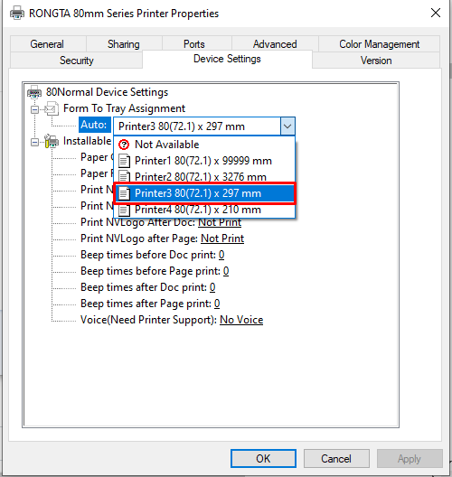
Pastikan Anda memilih ukuran kertas yang benar (opsi ke-3) saat Anda ingin mencetak faktur.
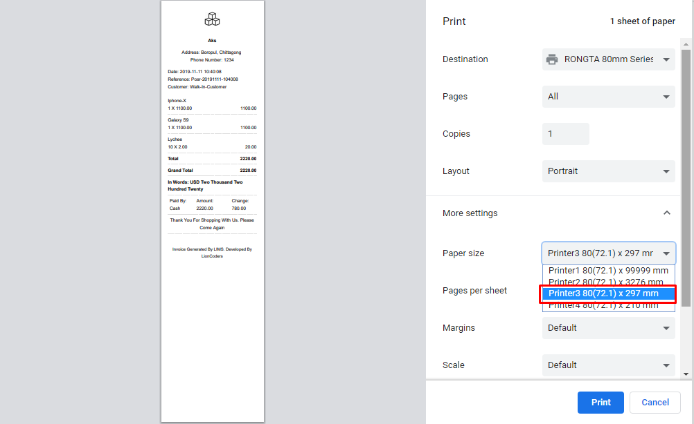
Dasbor
Dasbor dengan tampilan yang bagus untuk mendapatkan informasi Pendapatan, Retur Penjualan, Retur Pembelian, dan Laba hari ini / 7 hari terakhir / bulan saat ini / tahun berjalan dengan sekali klik.
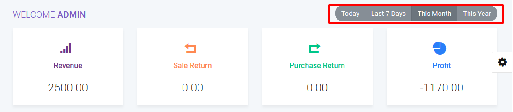
Anda akan mendapatkan informasi arus kas Anda yang berarti berapa banyak uang yang Anda hasilkan dan berapa banyak uang yang Anda belanjakan dari grafik garis ini.
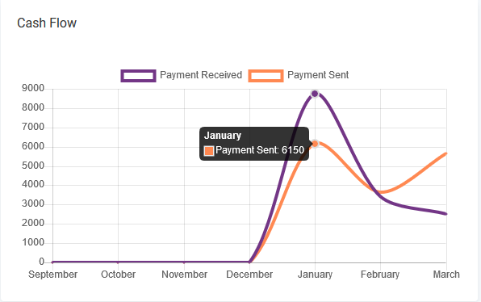
Anda juga mengetahui bulan Anda saat ini pembelian, pendapatan pengeluaran dari bagan ini.
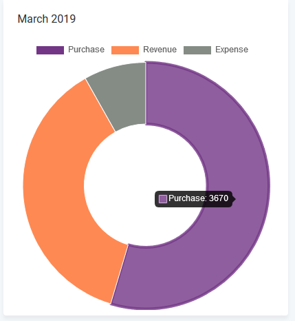
Bagan batang menunjukkan laporan tahunan pembelian dan penjualan tahun berjalan.
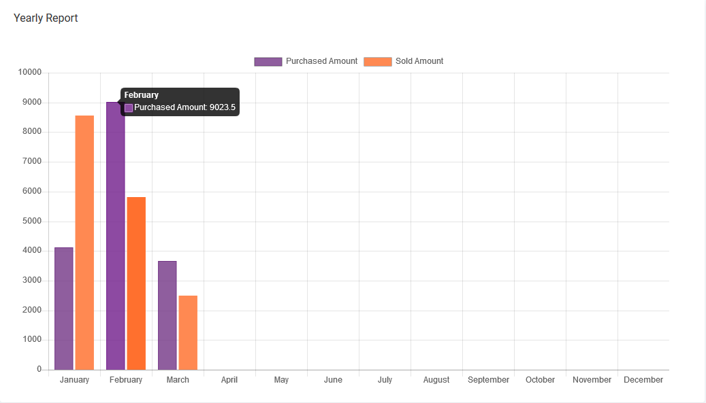
Dari Dasbor Anda juga akan mendapatkan transaksi terkini (jual, beli, kuotasi, pembayaran) dan 5 produk terlaris terbaik bulan ini dan tahun berjalan.
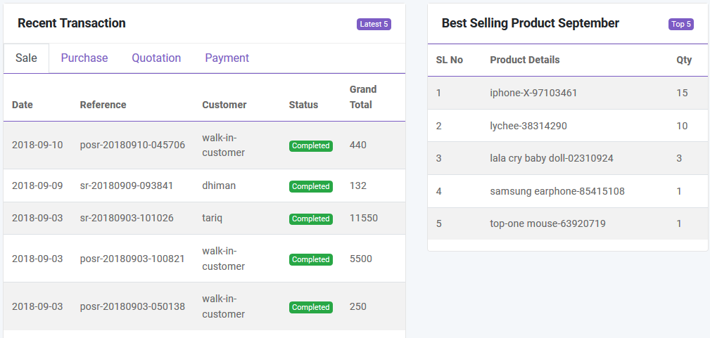
Produk
Kategori
Anda dapat menambah, mengedit dan menghapus kategori produk. Anda juga dapat mengimpor kategori dari file CSV dan mengekspor data tabel ke PDF dan CSV. Anda juga dapat mencetak data dari tabel.
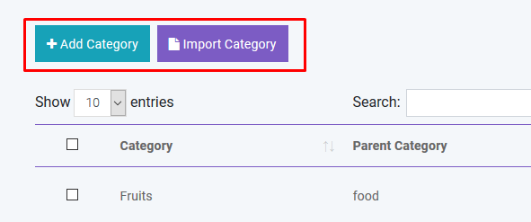 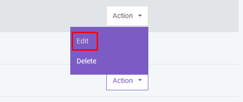
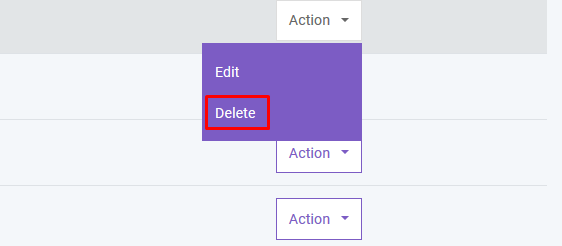 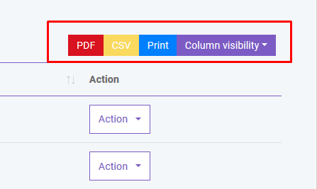
Jika Anda tidak ingin mengekspor kolom apa pun, Anda dapat melakukannya dengan mengklik tombol Visibilitas Kolom. Dari sini Anda dapat memilih kolom untuk dihapus dari tabel.
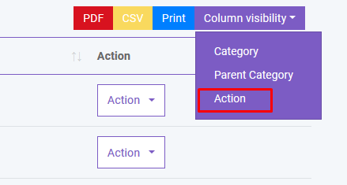 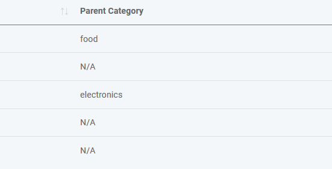
Untuk mengekspor data dari baris tertentu, Anda hanya perlu mencentang kotak pada baris terkait
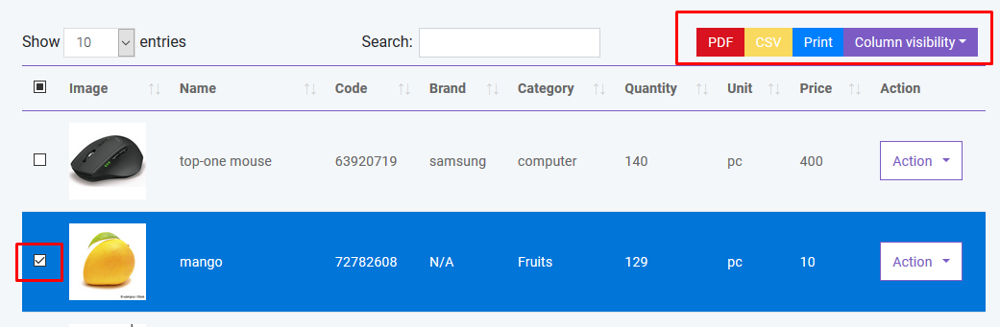
Jika Anda ingin menghapus semua baris dari tabel, Anda dapat melakukannya dengan sangat mudah seperti yang ditunjukkan di bawah ini. Anda juga dapat menghapus baris tertentu dari tabel.
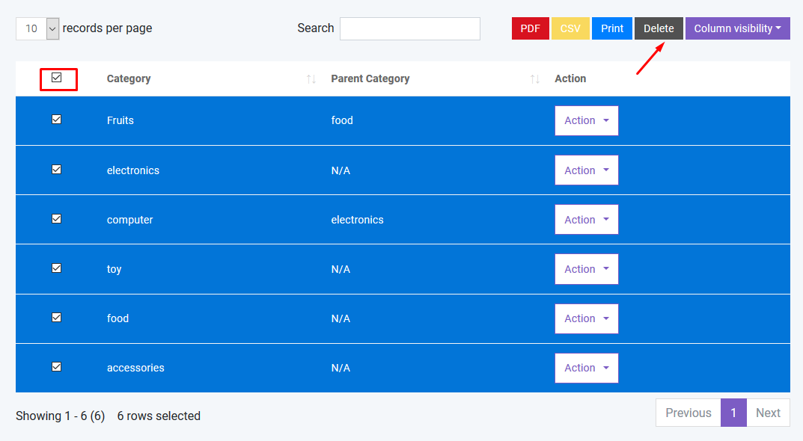
Jika Anda ingin mencari apa pun dari tabel, Anda cukup mengetikkan kata di kotak pencarian.
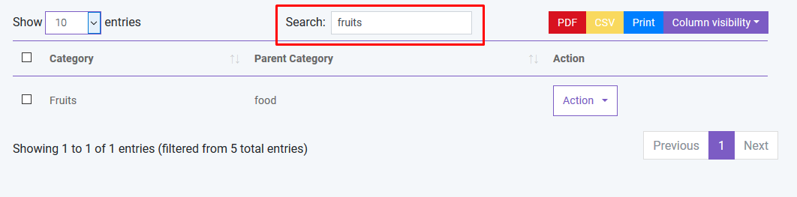
Anda juga dapat mengontrol paginasi dari Menampilkan dropdown.
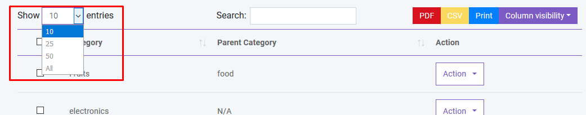
Produk
Di bagian produk Anda hanya akan menambahkan informasi umum dari suatu produk. Untuk menambah stok Anda harus membeli produk tersebut. Anda dapat membuat tiga jenis produk di Back Office System.
- Standar
- Digital
- Combo (Kombinasi produk standar. Seperti jus mangga adalah produk kombo karena terdiri dari mangga dan gula).
Anda dapat menambah, mengedit, dan menghapus produk. Anda dapat mengimpor produk dari CSV. Anda harus mengikuti petunjuk untuk mengimpor data dari CSV. Untuk lebih memahami Anda dapat mengunduh file sampel.
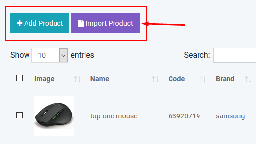 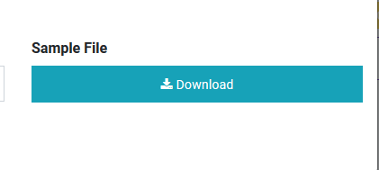
Anda dapat mengurutkan data tabel menurut kolom
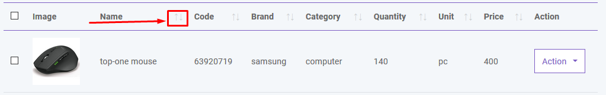
Dan Anda dapat mencari, mengekspor, dan mencetak data dari tabel yang telah kita bahas sebelumnya dengan lebih detail.
Print Barcode
Anda dapat mencetak kode batang dengan Back Office System. Untuk mencetak barcode kami sangat menyarankan untuk menggunakan Brother Label Printer.
Menambahkan Stok
Dibagian Produk Anda baru saja menambahkan informasi umum produk. Jadi darimana stok itu berasal? Untuk menambah stok, Anda harus membeli produk tersebut untuk gudang / toko tertentu. Software BOS ini cukup cerdas sehingga secara otomatis akan memperbarui jumlah stok dan Anda tidak perlu khawatir.
Pembelian
Tambahkan Pembelian
Anda dapat membuat pembelian dalam modul Pembelian.Dengan menciptakan pembelian, jumlah stok produk akan meningkat. Ada tiga status pembelian: Diterima, Sebagian, Tertunda, Pesanan. Anda dapat menambahkan produk ke pemesanan dengan mengetik atau memindai barcode produk.
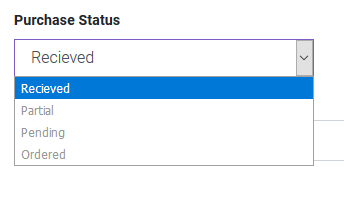 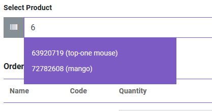
Anda juga dapat mengedit info produk dari tabel pesanan.
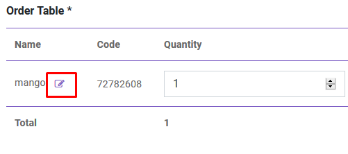
Setelah melakukan pembelian, Anda akan diarahkan ke halaman indeks pembelian. Anda akan mendapatkan ringkasan pembelian dari tabel. Untuk mendapatkan detailnya, Anda hanya perlu mengklik di baris tabel.
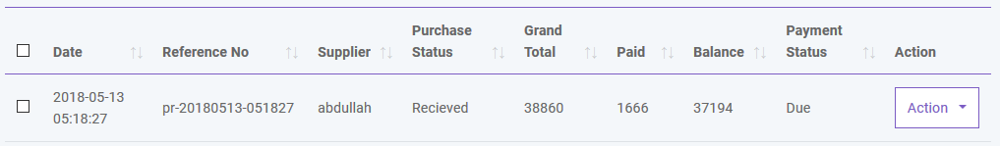
Import Pembelian
You can import sale from CSV.Anda harus mengikuti petunjuk untuk mengimpor data dari CSV. Untuk mendapatkan pemahaman yang lebih baik, Anda dapat mengunduh file sampel.
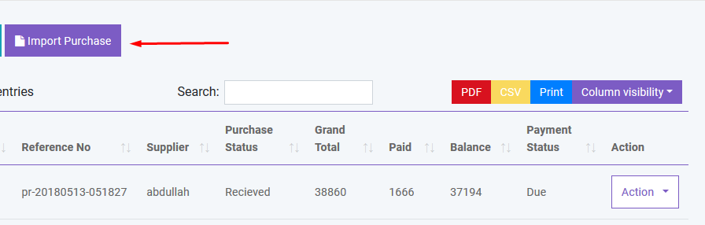
Pembayaran
Anda dapat melakukan pembayaran dari tabel Pembelian. Anda dapat melakukan pembayaran dengan Uang Tunai, Kartu Hadiah, Cek, Kartu Kredit dan Deposit.
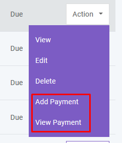 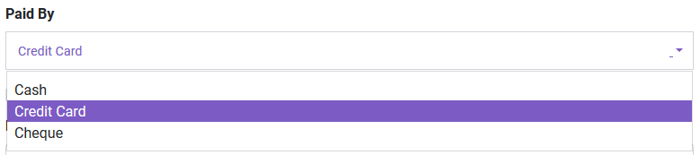
Dan Anda dapat mencari, mengekspor, dan mencetak data dari tabel yang telah kita bahas di bagianProduk.
Penjualan
POS (Point of Sale)
Anda dapat membuat obral dari POS. Pelanggan, Gudang dan Penagih (perwakilan perusahaan Anda) akan secara otomatis dipilih sesuai dengan Pengaturan POS di modul Pengaturan. Keybord layar sentuh diaktifkan dalam modul POS. Anda dapat menambahkan produk ke meja pemesanan dengan mengetik atau memindai barcode produk. Produk Unggulan akan ditampilkan di sisi kanan. Anda juga dapat menambahkan produk dengan mengklik gambar produk. Anda dapat mengedit info produk dari tabel pesanan.
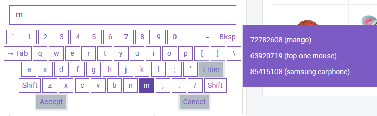
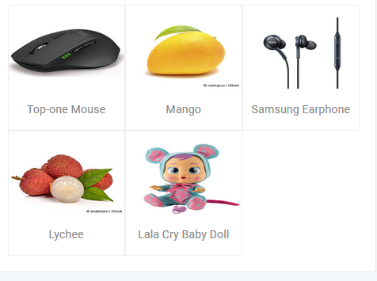

Untuk menambahkan diskon pesanan, pajak pesanan dan biaya pengiriman Anda hanya perlu mengklik tombol yang ditunjukkan di bawah ini. Untuk menyelesaikan penjualan, Anda harus mengklik tombolPembayaran.
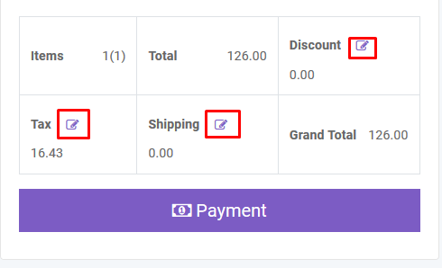
Setelah membuat penjualan, Anda akan diarahkan ke halaman indeks penjualan. Sebuah surat konfirmasi akan dikirim secara otomatis ke email pelanggan dengan detail penjualan. Anda akan mendapatkan ringkasan penjualan dari tabel. Untuk mendapatkan detailnya, Anda hanya perlu mengklik di baris tabel.
You can also generate Invoice automatically which is beutifully designed
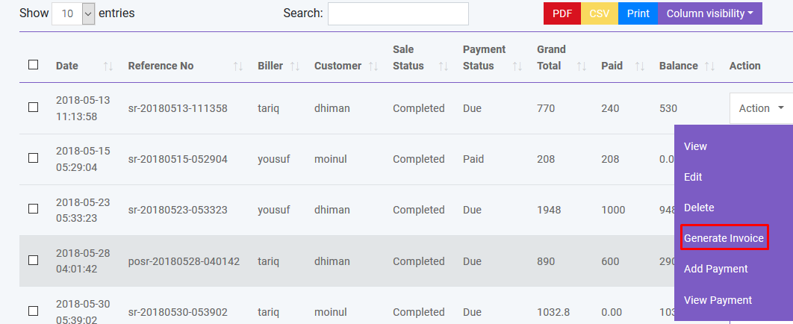
You can also create sale by clicking Add Sale button. Also you can import sale from CSV.You must follow the instruction to import data from CSV. To get better understanding you can download the sample file.
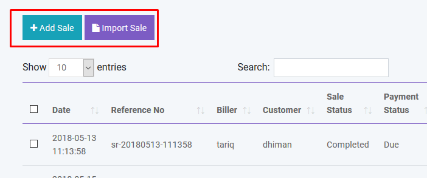
Payment
You can make payment from Sale table. You can make payment with Cash, Cheque, Credit Card, Gift Card, Deposit and Paypal. A confirmation mail will be sent automatically to customer's email with payment details.
And you can search, export and print data from table that we discussed in Product section.
Delivery
You can add delivery for your sold products. A confirmation mail will be sent automatically to customer's email with delivery details.
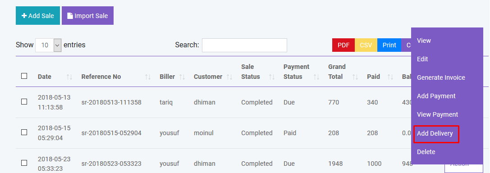
And you can search, export and print data from table that we discussed in Product section.
Gift Card
You can sell GiftCard to customer. By using gift card customer can purchase product. Again GiftCard can be recharged. Customer will be notified by mail when assigning or recharging a GiftCard.
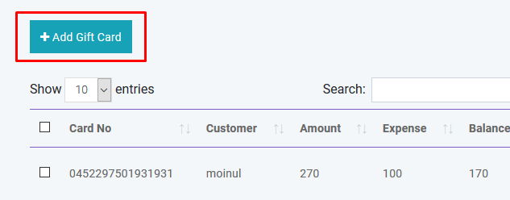 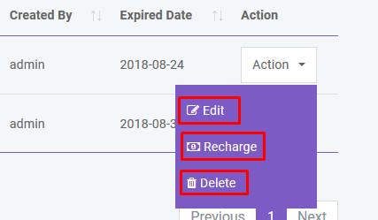
EXPENSE
Expense Category
You can create, edit and delete expense category in Expense module.
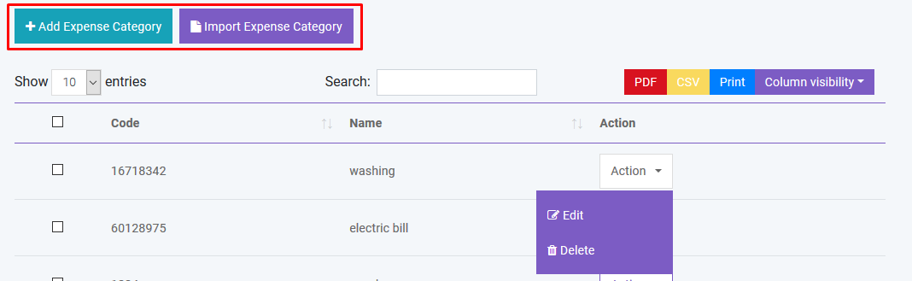
Expense
You can create, edit and delete expense in Expense module.
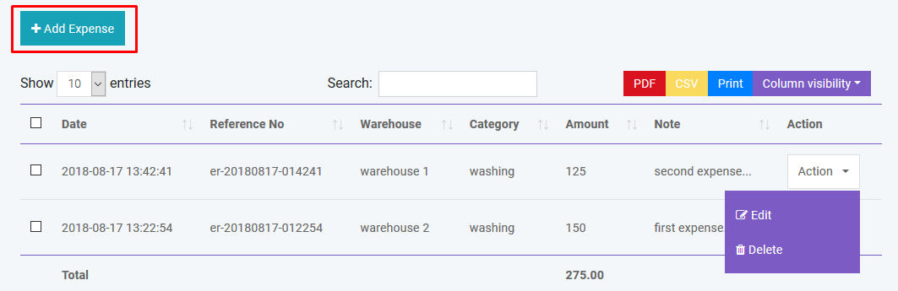
And you can search, export and print data from table that we discussed in Product section.
QUOTATION
Add Quotation
You can create quotation in Quotation module. There are two quotation status: Pending and Sent
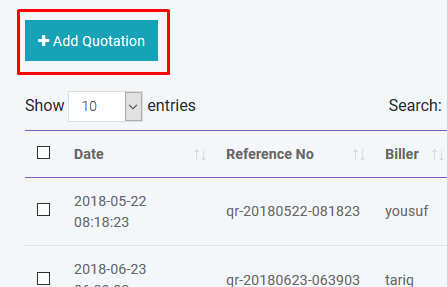
If quotation status is Sent a confirmation mail will be sent automatically to customer's email with quotation details.
Create Sale
You can create sale from Quotation.
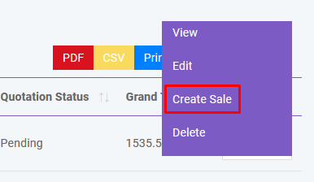
Create Purchase
You can create purchase from Quotation.
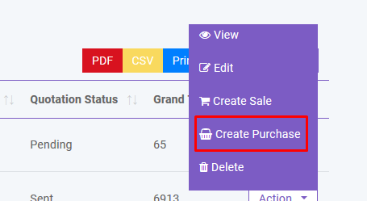
And you can search, export and print data from table that we discussed in Product section.
QUANTITY ADJUSTMENT
Add Adjustment
You can adjust product quantity in Quantity Adjustment module. There will be two operation: Subtraction and Addition
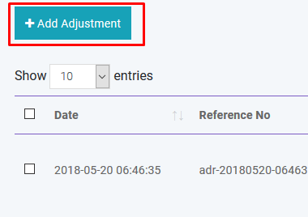 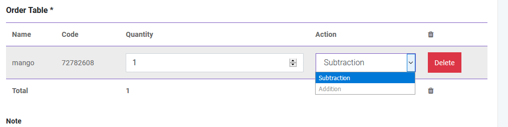
And you can search, export and print data from table that we discussed in Product section.
STOCK COUNT
You can count your stock from this module. Two types are available: Full and Partial. In Partial type user have to specify brand and category and the software will automatically count the stock for that brand or category. Then this information will be written in CSV file which you have to download to finalize the stock count. Please follow the instruction properly. After finalizing the stock count you can automatically adjust the quantity of products if it is necessary.
TRANSFER
Add Transfer
You can transfer your product from one warehouse to another in Transfer module. You can also transfer product with CSV file. You must follow the instruction to import data from CSV. To get better understanding you can download the sample file. You will get details of transfer by clicking in the table row.
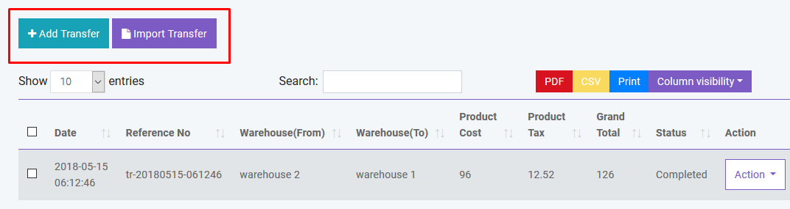
And you can search, export and print data from table that we discussed in Product section.
RETURN
Add Return
You can return your product with Return module. You can track return of both purchase and sale with this module. A confirmation mail will be sent automatically to customer's email with return details if customer refund products. Again if you return product to supplier a confirmation mail will be sent automatically to supplier's email with return details. You will get details of return by clicking in the table row.
And you can search, export and print data from table that we discussed in Product section.
Accounting
Account
You can create,edit and delete account to link all your transactions. You can also set default account for sale. All the payments must be done under an account.
You can generate Balance Sheet of your accounts. You can also make Account Statement of an specific account to see all the transactions which has done with this account.
HRM
Department
You can create,edit and delete department of your company.
Employee
You can create,edit and delete employee of your company. You can also give user access to employee.
Attendance
You can take employee attendance with this software. You can set CheckIn and CheckOut time in HRM Setting option under Setting Module.
Payroll
You can make payroll of your employee with this software. All payroll must be done from an specipic account.
PEOPLE
Add User
You can create, edit and delete user account. By creating user account password will be sent to the user's email that is given. Again you can active or inactive a user.
There is also be a register option to create user account. But his/her ID will not be activated untill admin will approve it.
Add Customer
You can create, edit and delete customer. After creating customer a confirmation email will automatically send to customer. You can add money to customer's database just like a bank account. You can also import customer with CSV file. You must follow the instruction to import data from CSV.
Add Biller
Biller is the representative of your company. You may have multiple company and you want to manage all your inventory from a single platform. So this is a solution for enterprise. You can create, edit and delete biller. After creating biller a confirmation email will automatically send to biller. You can also import biller with CSV file. You must follow the instruction to import data from CSV.
Add Supplier
Supplier is the people from whom you purchase products. You can create, edit and delete supplier. After creating supplier a confirmation email will automatically send to supplier. You can also import supplier with CSV file. You must follow the instruction to import data from CSV.
And you can search, export and print data from table that we discussed in Product section.
Reports
You can create generate various reports automatically by using BOS.
- Profit / Loss Report
- Best Seller Report
- Product Report
- Daily Sale Report
- Monthly Sale Report
- Daily Purchase Report
- Monthly Purchase Report
- Sale Report
- Payment Report
- Purchase Report
- Warehouse Stock Chart Report
- Product Quantity Alert Report
- User Report
- Customer Report
- Supplier Report
- Due Report
SETTINGS
Add Role
You can create, edit and delete user roles. You can controll user access by changing the role permission. So, under a certain role users have specific access over this software
Add Warehouse
You can create, edit and delete warehouse. You can also import warehouse with CSV file. You must follow the instruction to import data from CSV.
Add Customer Group
You can create, edit and delete customer group. Different customer group has different price over the product. You can modify this by changing price percentage in Customer Group module.
You can also import customer group with CSV file. You must follow the instruction to import data from CSV.
Add Brand
You can create, edit and delete product brand. You can also import brand with CSV file. You must follow the instruction to import data from CSV.
Add Unit
You can create, edit and delete product unit. You can also import brand with CSV file. You must follow the instruction to import data from CSV.
Add Tax
You can create, edit and delete different product tax. You can also import tax with CSV file. You must follow the instruction to import data from CSV.
And you can search, export and print data from table that we discussed in Product section.
General Settings
You can change Site Title, Site Logo, Currency, Time Zone, Staff Access, Date Format and Theme Color from general settings
User Profile
You can update user profile info from this module
POS Settings
You can set your own POS settings from this module. You can set default customer, biller, warehouse and how many Featured products will be displayed in the POS module. You have to set your Stripe public and private key for Credit Card Payment. To implement payment with Paypal you have to buy live api from Paypal. You will also need to fillup the following information.
HRM Setting
You can set default CheckIn and CheckOut time in HRM Setting.
SMS Setting
You can use Bulk SMS service via Twilio and Clickatell. You just have to fill the information correctly to activate this service. Please provide country code to send sms.